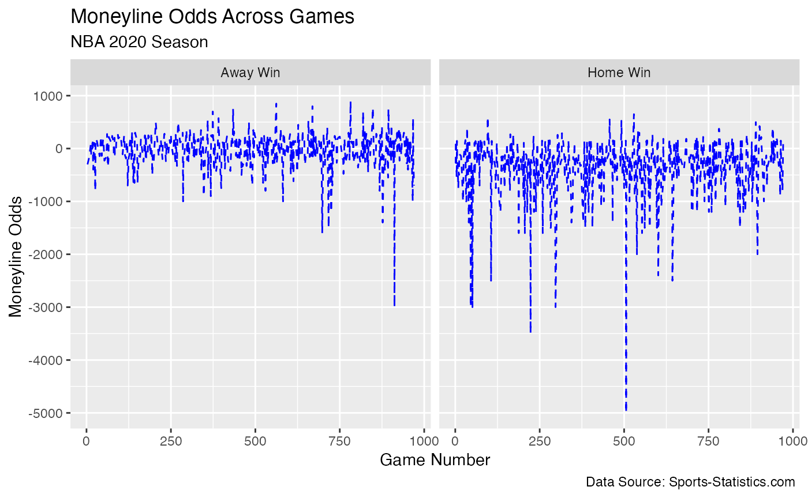

vignette
vignette.RmdIntroduction
Here, we’ll show how to use the functions in the package for an exemplary data analysis. Our goal is to see the relationship between pre-game favorites and end-game results.
The data we will analyze is about MLB and NBA betting odds.
Link to data
Data Dictionary:
MLB Data
| variable | class | description |
|---|---|---|
| date | character | date of the game |
| game | integer | game number |
| away_abbrev | character | abbreviation of away team name |
| home_abbrev | character | abbreviation of home team name |
| away_name | character | away team name |
| home_name | character | home team name |
| away_score | integer | final away team score |
| home_score | integer | final home team score |
| away_open_ml | integer | first away team moneyline |
| home_open_ml | integer | first home team moneyline |
| away_run_line | double | away team run line |
| home_run_line | double | home team run line |
| away_run_line_odds | integer | odds for away team run line |
| home_run_line_odds | integer | odds for home team run line |
| open_ou_line | double | first Over/Under line for total runs scored |
| open_ou_odds | integer | odds for first Over/Under line for total runs scored |
| close_ou_line | double | last Over/Under line for total runs scored |
| close_ou_odds | integer | odds for last Over/Under line for total runs scored |
NBA Data
| variable | class | description |
|---|---|---|
| date | character | date of the game |
| game | integer | game number |
| away_name | character | away team name |
| home_name | character | home team name |
| away_score | integer | final away team score |
| home_score | integer | final home team score |
| away_ml | integer | away team moneyline |
| home_ml | integer | home team moneyline |
if (!dir.exists(here("data"))) {
dir.create(here("data"))
}
mlb_colors <- teamcolors::teamcolors %>%
filter(league == "mlb") %>%
rename(team = name) %>%
select(team, primary)
away_team_lines <- mlb_odds_2019 %>%
select(away_name, away_close_ml) %>%
mutate(implied_ml = US2Implied(away_close_ml)) %>%
rename(team = away_name) %>%
select(team, implied_ml)
home_team_lines <- mlb_odds_2019 %>%
select(home_name, home_close_ml) %>%
mutate(implied_ml = US2Implied(home_close_ml)) %>%
rename(team = home_name) %>%
select(team, implied_ml)
avg_2019_mlb_ml <- rbind(away_team_lines, home_team_lines) %>%
group_by(team) %>%
summarize(avg_implied_ml = mean(implied_ml),
avg_ml_line = Implied2US(mean(implied_ml))) %>%
left_join(mlb_colors, by = "team") %>%
arrange(desc(avg_ml_line)) %>%
slice(-n()) %>%
mutate(team = fct_reorder(team, avg_ml_line, .desc = TRUE),
primary = fct_reorder(primary, avg_ml_line, .desc = TRUE)) %>%
ungroup()
avg_2019_mlb_ml %>%
ggplot(aes(x = team, y = avg_ml_line, label = avg_ml_line)) +
geom_col(fill = avg_2019_mlb_ml$primary) +
coord_flip() +
labs(y = "Average Moneyline",
x = "Team Name",
title = "Average moneyline for each team during\nthe 2019 MLB Season",
subtitle = "Houston Astros has the lowest ML on average",
caption = "Data Source: Sports-Statistics.com")
nba_odds_2020 <- nba_odds_2020 %>%
mutate(date = ymd(date))
nba_odds_2020 <- nba_odds_2020 %>%
mutate(
game_result = purrr::map2(home_score, away_score, ~ case_when(
.x > .y ~ "Home Win",
.x < .y ~ "Away Win",
TRUE ~ "Tie"
))
)
nba_odds_2020$game_result <- as.character(nba_odds_2020$game_result)
ggplot(nba_odds_2020, aes(x = home_ml, y = away_ml, color = game_result)) +
geom_point() +
labs(title = "Moneyline Distribution",
subtitle = "NBA 2020 Season",
x = "Home Moneyline",
y = "Away Moneyline",
caption = "Data Source: Sports-Statistics.com")
nba_odds_2020 <- nba_odds_2020 %>%
mutate(higher_ml_winner = pmap_chr(list(home_ml, away_ml, game_result),
function(home_ml, away_ml, game_result) {
if ((game_result == "Home Win" && home_ml > away_ml) ||
(game_result == "Away Win" && away_ml > home_ml)) {
return("Yes")
} else {
return("No")
}
}))
ggplot(nba_odds_2020, aes(x = higher_ml_winner, fill = game_result)) +
geom_bar() +
labs(title = "Relationship Between Higher Moneyline and Game Result",
subtitle = "NBA 2020 Season",
x = "Higher Moneyline Winner",
y = "Count",
caption = "Data Source: Sports-Statistics.com") +
scale_fill_manual(values = c("Home Win" = "skyblue", "Away Win" = "coral"))
nba_odds_2020$game_number <- seq_along(nba_odds_2020$away_name)
ggplot(nba_odds_2020, aes(x = game_number, y = away_ml, group = 1)) +
geom_line(color = "blue", linetype = "dashed", aes(y = home_ml)) +
facet_wrap(~game_result) +
labs(title = "Moneyline Odds Across Games",
subtitle = "NBA 2020 Season",
x = "Game Number",
y = "Moneyline Odds",
caption = "Data Source: Sports-Statistics.com")